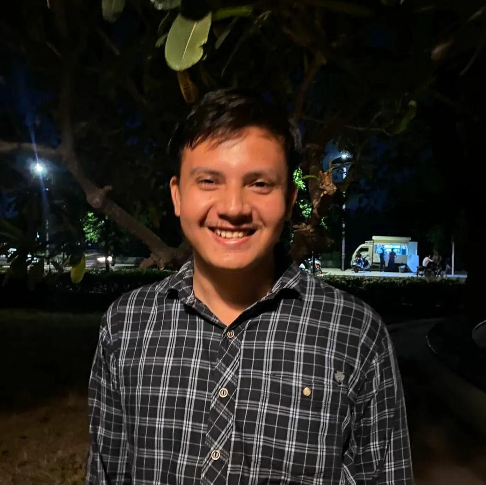

UTSAV KHAMAR
PERSONAL STATEMENT
Disciplined, tenacious, and creative Computer Engineering graduate with
Operating System and programming skills and interested in Software
Development and Cyber Security. I possess great analytical, communication
and interpersonal skills. I will give my best to find solutions for
intractable problems.
SKILLS
-
SOFT SKILLS
- Creative Spirit
- Fast learner
- Time Management
-
HARD SKILLS
- programming Skills: C, Java, Javascript, Python
- Operating System: windows, Linux/Unix
- Database Skills: SQL, MongoDB
- Tools and Technologies: Visual Studio, GitHub, Android Studio
- Computer Networks
- Cryptography and Network Security
EDUCATION
| DEGREE |
UNIVERSITY/BOARD |
PASSING YEAR |
PERCENTAGE |
Bachelor of Engineering
(Computer Engineering) |
Gujarat Technological University |
2022 |
8.46 CGPA
79.6% |
| HSC |
Gujarat State Board |
2018 |
67% |
| SSC |
Gujarat State Board |
2016 |
87% |
INTERNSHIP
Arth Infosoft | Jan 2022 - April 2022
Web Developer Intern
-
I learned about front and back-end development and different
tech-stacks.
- Had hands-on experience by contributing to ongoing live projects.
-
I designed and developed the front page using React JS, also designed
the database.
-
Tools/Technologies: HTML, CSS, React JS and PHP ; Database: MySQL.
HOBBIES and INTEREST
- Reading
- Programming
- Music
- Meditation